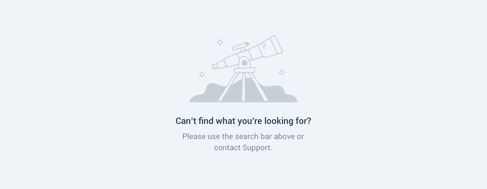
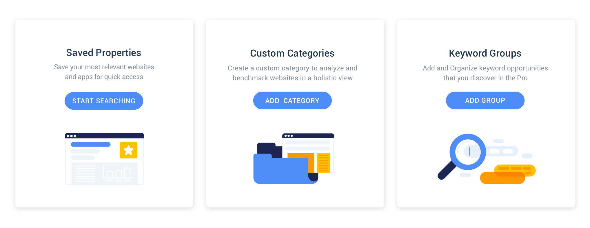

⟵
Similarweb, 2018-2019
Similarweb's Product Imagery
By defining and systemizing our approach to imagery in the product, we were able to create a clearer, more consistent and delightful user experience.
Audit
When I joined Similarweb's design team in the end of 2017, there were a few illustrations in the product in various styles. There were no guidelines for when, how and where imagery should live inside our features.
As a first step, I conducted a thorough audit of the illustrations in the product. Then I started looking for "classic" spots for adding imagery - empty states, success messages, errors, on-boarding etc and listed them.
Competitive Analysis
I looked at other similar products to identify current trends and conventions. I found that not many companies have a consistent imagery style in their product, but the ones that do, usually have a better overall user experience.
This process helped a lot with communicating the goals of this project internally -
Showing examples from other similar products was a great way to gain confidence from stakeholders in the importance of this project.
Principles
We defined a few principles to guide our process ahead:
- Clear - The illustrations would assist with comprehension of the interface and would not interfere, overload, or create distractions.
- Human - The illustrations should bridge between the data and our users.
- Delightful - The illustrations should make our users feel good!
- Unique - The illustrations should help Similarweb's brand stand out in the crowd.
The next step was to examine a few existing cases of illustrations in use in the product. For each case I asked the following questions:
- What does the illustration communicate to the user?
- Does it add clarity/understanding of this specific feature?
- Does this illustration meet the principles we’ve defined?
- Is this illustration inline with the visual style of the rest of the illustrations?
These questions helped me identify the existing illustrations’ strengths and weaknesses - and at this stage, my objective was first of all to make our illustrations as clear as possible. I wrote new requirements for each existing illustration in the product and focused on the messaging.
Scenarios
I decided to divide the illustrations into 3 types, each dedicated to communicate a different type of scenario to our users. I argued that a consistent style for each type will improve our communication to the users.
- Success Messages
- Errors + Empty states
- Information
Early Style Explorations
The design process started gradually by approaching the actual features in the product and sketching possible solutions that fit the requirements I wrote for them earlier.
Early explorations included line drawings, various color combinations, abstract vs. figurative, shakey vs. straight lines and hand-drawn concepts.
After a few iterations and when I felt I have a good basis for the overall style - I returned to the three types of illustration by scenario I defined earlier and created a visual direction that can live inside the product for each one:
Success Message
Full color palette + a green checkmark to send a message of confirmation to the user.
Errors + Empty states
Monochrome illustration, partly outlined to emulate that something is missing. These two scenarios have a potential to cause frustration for the users, so images and copy can be a little more playful to create a positive effect.
Information
An full color palette illustration that joins a paragraph text.
I conducted usability tests to validate my illustration concepts to potential users and asked that they verbalize their impressions on what I was trying to communicate.
Equipped with valuable feedback I returned to making the visual style tighter and started reproducing the rest of the illustrations in the product.
Marketing Design Workshop
As part of the implementation process, I hosted a two-days workshop with our Marketing designers. The initial goal was to work together on a new visual style for icons and other marketing materials.
Similar to what was done inside Similarweb’s product, we took actual needs of imagery and in marketing materials and explored new visual directions that would convey the right messages but also be aligned with the Similarweb’s updated visual style.
This workshop has strengthened the connection between the two design teams - working together around the same core design principles made us communicate better and promoted more impactful work on both teams.
Impact and Next steps
A product’s visual style may be ever evolving due to new product features and requirements or changing trends and markets. However, I feel that working on the colors and imagery of Similarweb had resulted in a massive improvement of our communication ways with users.
Aligning the product’s visual style had contributed to the brand’s voice and personality. Quickly upon implementation of first imagery in the product, the new visual style was incorporated into the corporate website, to Similarweb branded events (meetups, conferences and internal events), in educational tools and various marketing projects.
Moving forward, I think one of the most exciting directions we can explore is defining guidelines to motion of UI and illustrations for maximum clarity and delight.